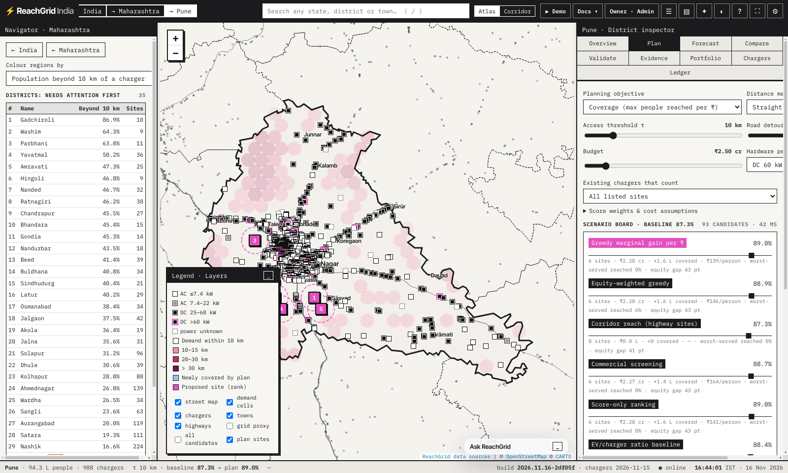
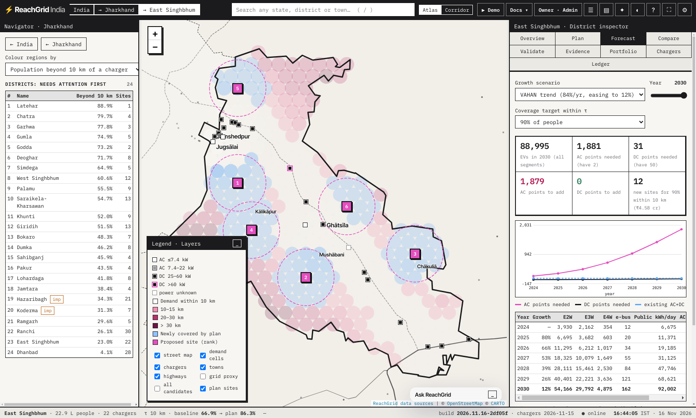
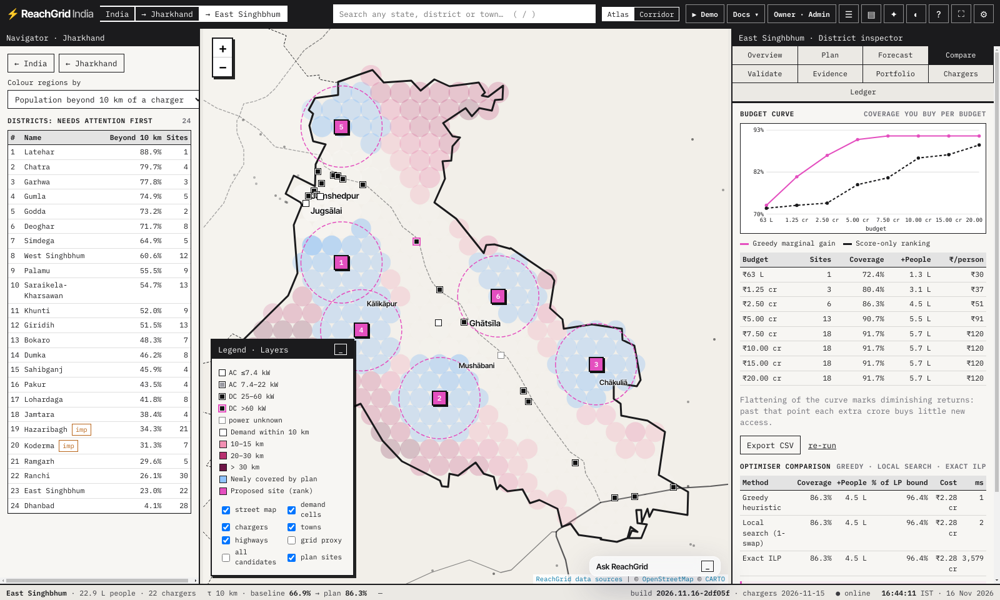
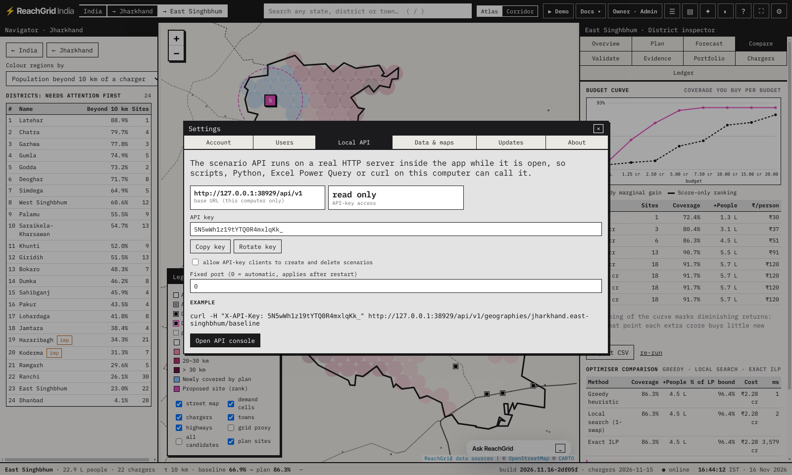

Introducing ReachGrid ....................... Intelligence beyond the charger map




ReachGrid measures who is out of reach, explains every recommendation and tests which deployments buy the most new access per rupee, with confidence shown separately from the score.
| Requirements | Windows 10/11 64-bit · 4 GB RAM · about 450 MB disk · internet optional (street maps, routing, updates) |
| Your data | Stays on your computer under %APPDATA%\ReachGrid India; nothing is uploaded |
| Uninstall | Settings → Apps → ReachGrid India; your projects and profile are kept unless you delete the folder |
| Source | github.com/akshatinnovate-png/EV-Infra-ReachGrid-India · every release is built and tested automatically on Windows |
Full phase status, unit economics and market sizing: business model & roadmap. Method and formulas: methodology.
| Team | GoingAgain |
| Team ID | TM-7E9065875FC |
| Institution | Varying (multi-institution team) |
| Team leader / contact | Akshat Sarkar · akshat.innovate@gmail.com |
| Submission | Round 1 concept, methodology & roadmap, with this working prototype · source: GitHub |